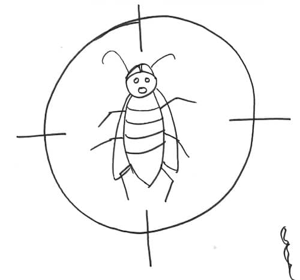

Some teams spend 95% of their development time fixing bugs … An entrepreneur I worked with reported an even scarier story. He went bankrupt because bugs were taking all the development time. He had no time left for new features !
At the other end of the spectrum, some eXtreme Programming teams reported bug rates as low as 1.5 per month !
💡 Some XP teams reported bug rates as low as 1.5 per month !
Wouldn’t it be great for everyone if we had less bugs to fix ? Programmers would do more interesting work. Business people would get more valuable features. People would do less overtime. All this while users get a better product !

Last year, in my team, we reached and maintained a #ZeroBugs state. Here is how we did it.
What’s the #ZeroBugs policy
Before we jump into our story, let’s take a second to understand what this is all about.
Bugs waste time. They waste the time of users, who can’t do what they need. They waste everyone’s time with interruptions from unhappy user. They steal time from new features development. If you have a large number of known bugs, you’ll also waste some time organizing them : eliminating duplicates, prioritizing them, ignoring others …
A #ZeroBugs policy is the convention of having no bugs in your backlog. This means that when someone finds a defect, it should be immediately :
- fixed before any other feature
- prioritized as a new story
- or ignored (for the moment)
Obviously, the less bug you create the easier this will be.
Our journey to a #ZeroBugs policy
Context
We were an R&D team, building a data management system. Our product was moving outside of pure research and development. Other teams were starting to use it and often reported bugs back to us.
We’d first read about #ZeroBugs in The Art of Agile Software Development. Given enough automated testing, XP teams could almost stop doing bug fixing !
As we had very solid automated testing in place, we decided to take the extra steps to save time on bug fixing.
First attempt
There is a straightforward way to install a #ZeroBugs policy. Make sure to have a customer or a Product Owner to prioritize defects as soon as they appear (check this story for an example).
Unfortunately, this would not work for us. Our Product Owner was great at providing us with a long term vision. He could not be available for day to day bug prioritization though.
Our first try was to propose a definition for bugs that we could use ourselves to classify them. We decided that something was a bug if either of the following was true :
- It corrupts data.
- It returns wrong results. As we were building a data management system, this was rather easy to verify.
- It used to work but is now broken
Whenever we found an issue meeting any of these points, we would start working on it straightaway.
💡 Exploratory testing goes hand in hand with #ZeroBugs policy
To speed up downstream integration of our product by other teams, we also started Exploratory Testing. Exploratory testing is a practice that goes hand in hand with a #ZeroBugs policy.
Unearthing a bug debt
During the first exploratory testing session, we found more than 10 bugs. We thought that with a bit of focus we could fix all lingering bugs in a few weeks max … After 2 other sessions and more than one sprint of intense bug fixing, we had even unearthed more bugs. We were wrong, this would take a lot more than a few weeks.
If we kept on our 1 hour exploratory testing sessions every sprint, we would fill our backlog with bugs. We would also be fixing bugs for a few months before we could tackle any new feature !
We agreed on the following strategy to fix all these bugs little by little :
- stop these intense exploratory testing sessions
- do shorter exploratory testing sessions at the end of every story
- fix 5 to 6 bugs every sprint
We hoped to fix all our bugs in a few months.
Next week
That was the first part of a series of posts about #ZeroBugs policy. In the next post, I’ll explain how we dealt with this bug debt and dig into the consequences it had on our work.